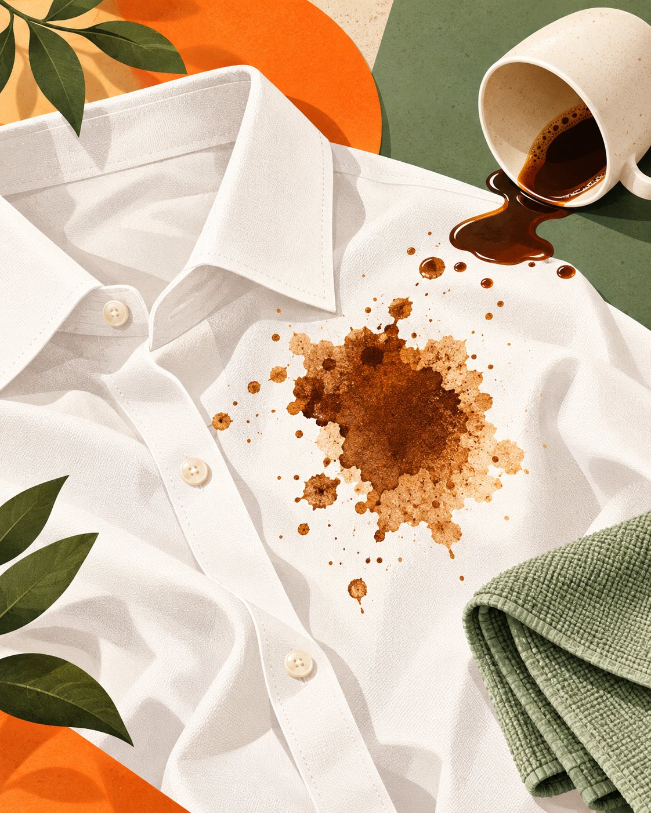

Leke çıkarıcı önerileri
ve pratik çözümler
Kıyafet, koltuk ve halı lekeleri için temizleme yöntemlerini keşfedin.
LEKE REHBERİNİ KEŞFET
LEKE ÇÖZÜM BULUCU
Lekenin kaynağı ne?
Seçin, yüzeyi belirtin, ilk adımı birlikte bulalım.